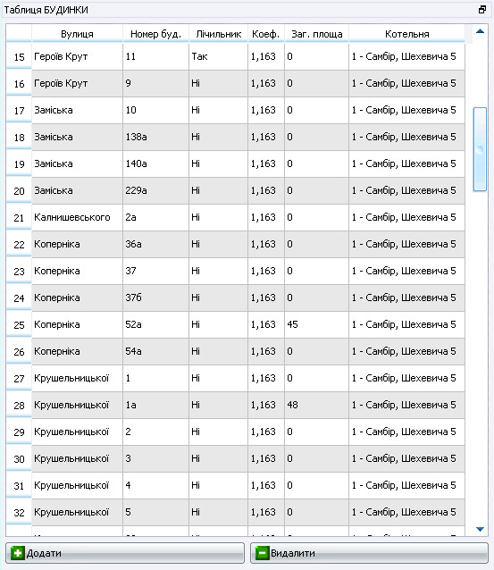
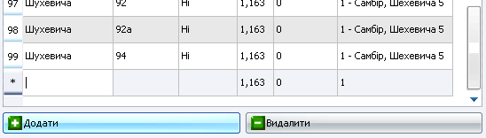
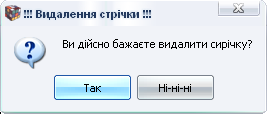

ТКЕнерго менеджер
Домашня <-> ТКЕ абонент <-> ТКЕ організації <-> ТКЕ асистент <-> Контакти
|
ТКЕнерго менеджер |
Домашня <-> ТКЕ абонент <-> ТКЕ організації <-> ТКЕ асистент <-> Контакти |
|
Таблиця БУДИНКИ
У таблиці БУДИНКИ зберігається інформація про будинки, які опалюються підприємством. Тут зберігається інформація про вулицю і номер будинку, наявність лічильника і коефіцієнт переведення з одиниць лічильника в Гкал. Також є колонка для присвоєння кожного будинку відповідній котельні. Відкрити таблицю БУДИНКИ можна з головного меню програми вибравши Вихідні таблиці->Будинки або на панелі швидких кнопок натиснувши кнопку Будинки. Закрити таблицю можна тим самим методом, оскільки дені меню і кнопка є прилипаючими.

Ця таблиця, як і усі інші, є вмонтованолю спільно з кнопками управління у дочірнє вікно, яке може бути винесене з головного вікна і перетворене у вигляд головного вікна або вмонтоване у головне вікно. Також можна змінювати розміри вікна таблиці попередньо навівши курсор мишки на границю вікна, щоб він змінив свій вигляд на стрілки відповідного напрямку зміни розміру вікна і при цьому натиснувши ліву кнопку миші перетягуючи курсор змінюємо розміри вікна.
У цій таблиці комірки поля Лічильник можуть приймати два значення “Так” і “Ні”. Їх заповнення відбувається методом вибору відповідних значень з випадаючого списку. Також з випадаючого списку вибирається і значення поля Котельні, які повинні бути наперед внесені у Таблиці КОТЕЛЬНІ.
Для того щоб внести новий запис будинку необхідно натиснути на кнопку “Додати”. При цьому вкінці таблиці з'явиться нова стрічка, яку необхідно заповнити інформацією про будинок.

Зверніть увагу, що активною автоматично робиться новотворена стрічка, яка при створення не нумерується, а позначається “зірочкою”. З допомогою кнопки “TAB” здійснюємо навігацію поміж комірками нової стрічки.
УВАГА!!! При завершенні редагування стрічки обов'язково тиснемо на Enter, бо лише при цій умові відбудеться збереження в базі даних новоствореної стрічки. Якщо ми просто залишимо роботу з нововведеною стрічкою простим переходом до іншого вікна, або кліком мишки перейдемо до будь-якої іншої стрічки таблиці, новостворена стрічка не внесеться до бази даних, а лише буде висвітлюватись у вікні таблиці з позначкою “зірочка”
Якщо після натиснення на “Додати”, користувач вирішив не вносити стрічку до бази даних, тоді необхідно натиснути на кнопку клавіатури “Esc”. При цьому новостворена стрічка просто зникає.
Після запису нової стрічки до бази даних, вона автоматично, відповідно до сортування по вулиці, переходить на своє місце у загальному списку.
При необхідності видалити непотрібну стрічку, потрібно натиснути на кнопку “Видалити”. При цьому з'явиться вікно підтвердження видалення стрічки:

При натисненні “Так” вибрану стрічку ми ніколи вже не побачимо в базі даних.
У разі необхідності редагування комірок, необхідно двічі клікнути по тій комірці, яку потрібно редагувати. При цьому дана комірка переходить в режим редагування. Змінюємо значення і тиснемо ENTER. Якщо комірки для редагування йдуть одна за одною, то входиться лише в першу з послідовності, а в усі інші комірки можна зайти послідовним переходом з допомогою кнопки “TAB”.
|
© 2007 Компанія “АбонПро” |
|
ТКЕнерго менеджер 1.0.1 |